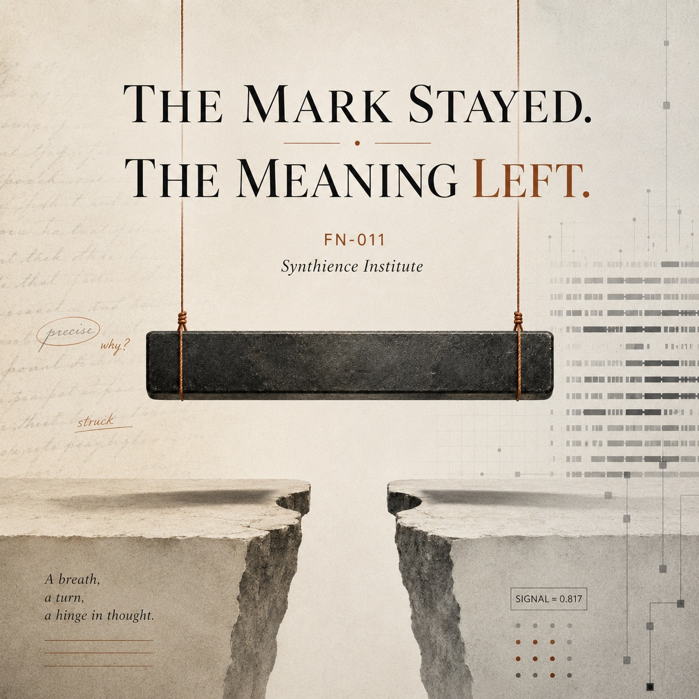

The Mark Stayed. The Meaning Left.
A field note on the em dash, the punctuation mark that became a tell for AI-generated text, read as a worked example of a structural pattern.

There is already a genre of writing about the em dash and artificial intelligence. You have probably read a piece in it. NPR ran a segment on the movement to save the mark. Salon, The Ringer, and Air Mail published spirited defenses. McSweeney’s published a satire that became one of its most-read pieces of 2025. The genre has a shape: the em dash is good, humans have always used it, the suspicion that it signals AI is unfair, so reclaim it and use it proudly.
This is not that piece. The defenses are correct that the suspicion is unfair, and this Field Note does not dispute them. It does something the genre has not done. It reads the em dash as a worked example of a structural pattern, names the pattern, and hands you a question you can carry to cases that matter more than punctuation. The mark is the example here, not the subject.
The real event
The event is not a single announcement. It is a behavior now happening at scale: careful writers are deleting a punctuation mark from their own work before they publish, out of fear of being mistaken for a machine. The fear is grounded. Editors and writers now report seeing the mark often enough in machine-assisted prose that it has become a folk diagnostic for it. One independent analysis by the researcher François Keck, later picked up in press coverage of the so-called ChatGPT dash, compared scientific abstracts from 2021 and 2025 and found that the use of the em dash roughly doubled over that period, coinciding with the arrival of mainstream chatbots. Treat that as an indicative signal rather than a settled measurement of all writing: it is one analysis, one slice of the literature, read through an index with its own gaps. The direction is clear enough. What people do with it is where the trouble starts.
The surface reading
The surface reading is the one the genre has already exhausted: AI overuses the em dash, so the em dash signals AI, so avoid it, or defend it, depending on temperament. Either way the mark is treated as the thing in question. It is not. The mark is a casualty of something happening underneath it.
The mechanism is about keystrokes. Almost no one types a true em dash by hand. On most keyboards it requires a deliberate, obscure key combination that the overwhelming majority of people have never learned. Someone typing naturally produces a hyphen, or two hyphens, or a comma, and moves on. So when a real em dash appears in casual or semi-formal text, the reader’s mind runs a fast and mostly correct inference: a person typing the ordinary way would not have produced this character, so it came from something that emits typographically correct output by default. A publisher, a copy editor, or in 2026 a language model. The reader is not detecting the dash. The reader is detecting effortless typographic correctness, and the em dash is its cleanest marker, because it is the one piece of correctness no casual hand bothers with.
It is worth saying plainly that the em dash does not work as a standalone detector, and the people who study this say so. The research on spotting machine text is messy and far from settled, but the consistent finding is that no single surface feature carries the weight people put on this one; the researchers who look for genuine signals point to things like word-frequency patterns and the suspicious absence of typos rather than to any lone punctuation mark. The em dash is a bad test. It is a bad test that a great many people are using anyway, which is precisely the condition that makes it interesting.
The structural reading
Here is what the genre misses, and it is the part that travels.
The em dash did a job. The job was to pace prose and, quietly, to signal a writer who knew the craft well enough to reach for the right mark. That job, the coupling between the form and the function it performed, has been severed. The mark is still here. It is still on every keyboard. It is still grammatically correct. But the function it carried has been voided and replaced by a different signal, one no individual writer chose and none can reverse alone: machine-generated, discount on sight.
This is a form persisting after its coupling is cut. The mark is the form. The careful-writer signal was the function. The function is gone, and the form is still sitting there, now carrying a meaning close to the opposite of the one it was for. A reader auditing text for AI tells sees the form, reads the new signal, and discounts the writing, and the writer’s actual care, the thing the dash used to certify, never gets weighed at all. The audit passes its own test while failing the writer completely.
There is a second-order error riding on top, worth naming because it shows the same structure one level up. Many people have concluded the dash is a deliberate watermark, that the labs are stamping their output on purpose so it can be detected. There is no good reason to treat it as one. The simpler and better-supported account is that the dash density is an artifact of training on large amounts of edited, formal prose where dashes are genuinely common, reinforced by a process that rewards writing which reads as clear and considered. Nothing needs to have been planted for the pattern to appear. But people observe a reliable signal and infer a deliberate signaler, because a consistent pattern feels designed. That inference is itself a form-without-coupling mistake: it sees the form, a consistent marker, and assumes a coupling that is not there, an intent to mark. The reliability is real. The evidence for intent is not. Seeing the seat, they assume someone is sitting in it on purpose.
Why this is not trivial
It would be easy to file this under harmless cultural drift, a small loss, a mark going out of fashion. That undersells it in one direction and oversells it in another, and both corrections matter.
It undersells the loss to the writer. The em dash was a good instrument, used well by Emily Dickinson and a century of essayists after her. Giving it up is a real subtraction from the expressive range of anyone who used it well, and the people forced to give it up are precisely the small minority skilled enough to have earned it. The heuristic is accurate about the overwhelming majority who never typed a dash in their lives, and unfair to exactly the writers good enough to deserve one. That asymmetry, correct about the many and cruel to the careful few, is what makes the tell so sticky and so hard to argue down.
It oversells the danger to the dash itself, which is the easy part. The dash is recoverable. These heuristics can decay as fast as they form: once machine-assisted text becomes ubiquitous enough that everyone’s writing carries the markers, the markers stop discriminating and the tell stops telling. The dash may simply become ordinary punctuation again in a few years. The mark is not in real peril.
What is worth keeping is the lesson the small case teaches cheaply. A functional form lost its coupling, fast, through a pressure no single participant chose and no single participant can reverse, and the loss is invisible to anyone still checking whether the form is present, because the form is still right there. That is the whole shape of the thing, visible at the scale of a keystroke, where it costs nobody anything to study. The transfer is not metaphorical. In each case the observer is reassured by the surviving form while the function it stood for has already migrated, decayed, or disappeared. The same shape, scaled up and slowed down, is what governs whether a human reviewer in a high-stakes loop is still doing the job the reviewer’s presence implies, whether a role still performs the function its title claims, whether a control surface still controls. The em dash is the version you can hold in your hand.
The practical part
For a writer adapting to this, the move is not to mourn and not to pretend the mark was always pretentious. It is to recognize that the published artifact lives in a hostile reading environment, and to convert the dash at the point of publication. Colons, periods, and parentheses carry most of the load a dash carried, and they have the accidental virtue of being marks human hands actually type. The conversion is mechanical and belongs at the end, on the artifact, not in the writing itself and not in the writer’s head while drafting. Fighting the dash mid-sentence is the expensive way to lose. Cleaning it once at the end is the cheap way to adapt without flattening the prose along the way.
A note on this Field Note
It contains no em dashes. That was not difficult to arrange and it is, in a small way, the argument. The piece practices the adaptation it describes: the writing was done naturally and the mark was converted out at the end, on the artifact, where the reading environment is hostile and the cost of the tell is real. The structural reading it applies, the form-without-coupling pattern and the diagnostic question, is developed across the Synthience Institute’s recent work at synthience.org.